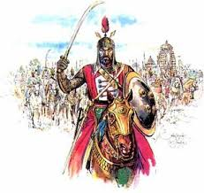
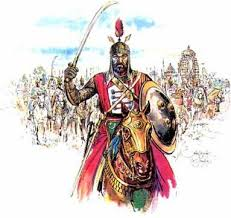

(HISTORY OF KANNAUJ)
 

Archaeological discoveries show that Kannauj was inhabited by the Painted Grey Ware and Northern Black Polished Ware cultures.
1300-600 BCE and 700-300 BCE, respectively.
Under the name of Kanyakubja, it is mentioned as a well-known town in the Hindu Epics, the Mahabharata and the Ramayana, and by the grammarian Patanjali (ca. 150 BCE).
the early Buddhist literature mentions Kannauj as Kannakujja, and refers to its location on the trade route from Mathura to Varanasi and Rajgir.
Kannauj may have been known to the Greco-Roman civilization under the name of Kanagora or Kanogiza, which appears in Geography by Ptolemy (140 CE), but this identification is not confirmed. It was also visited by the Chinese Buddhist travelers Faxian and Xuanzang in the fifth and seventh centuries,respectively.
Kannauj formed part of the Gupta Empire. During the decline of the Gupta Empire in the 6th century, the Maukhari Dynasty of Kannauj - who had served as vassal rulers under the Guptas - took advantage of the weakening of central authority, broke away and established control over large areas of northern India.
Under the Maukharis, Kannauj continued to grow in importance and prosperity. It became the greatest city of Northern India under Emperor Harsha (606 to 647 CE), who conquered it and made it his capital.
Chinese pilgrim Xuanzang visited India during the reign of Harsha, and described Kannauj as a large, prosperous city with many Buddhist monasteries.
Harsha died with no heir, resulting in a power vacuum until Yashovarman seized power as the ruler of Kannauj.